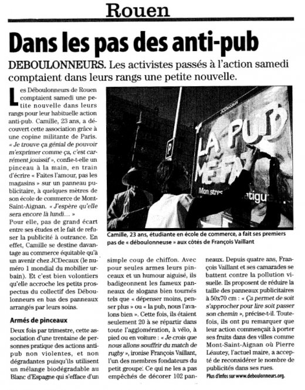

|
|
Accueil du site > Rouen > Action des déboulonneurs le 15 octobre 2011 à Rouen
Action des déboulonneurs le 15 octobre 2011 à Rouen
Article publié le vendredi 21 octobre 2011
|
|
- Heure de l’action : 10h – 12h30
- Lieu : barbouillage au blanc d’Espagne en itinérance dans les rues de Rouen (rive gauche et rive droite), Mont-Saint-Aignan, Maromme et Notre-Dame-de Bondeville, par quatre équipes mobiles, à pied, en vélo et en voiture.
- Nombre de panneaux touchés : 102 surfaces publicitaires commerciales d’obstacles urbains (sucettes) et aubettes JCDecaux + 3 panneaux de 8m2. Genre de slogans : « Faites l’amour, pas les magasins », « Qui paie la pub ? », « Ici bientôt un arbre », « Pub = pollution visuelle », « Ville vendue à la pub », etc. Mais le plus fameux, sur les publicités vantant un médicament contre le stress et la fatigue : « La pub me fatigue ! », « Halte au stress de la pub ».
- Nombre d’activistes : 21, munis de pinceaux et pots de confiture garnis de blanc d’Espagne, tous avec un gilet jaune de la sécurité routière. Un tract fut placé avec du ruban adhésif sur chaque surface barbouillée, expliquant l’action et mentionnant le site des déboulonneurs.
- Nombre approximatif de passants-spectateurs : beaucoup ! d’abord surpris, quelques grincheux, mais la grande majorité applaudissant cette action antipub non-violente qui ne dégrade rien.
- Nombre de journalistes présents : 1 de Paris Normandie, 1 de Liberté Dimanche, 1 de la radio locale HDR.
- Attitude de la police : rien à signaler. Il faut dire que nous étions très mobiles.
- Faits particuliers : l’agglo de Rouen a vécu de belles heures antipub ; impact local important.
- Samedi : les 105 barbouillages étaient encore intacts à 19h, heure à laquelle un camion est passé en effacer au centre ville de Rouen.
- Dimanche 19h : les ¾ des barbouillages étaient encore en place, mais quelques-uns avait le blanc d’Espagne qui commençait à fatiguer.
- Lundi 19h : ¼ des barbouillages étaient encore là (à Mont-Saint-Aignan et Notre-Dame-de-Bondeville)
- Mardi 9h : plus aucun barbouillage en place.
- Retombées presse :
- 1 article avec photo dans Liberté Dimanche du 16 octobre
- 1 article avec photo dans Paris Normandie du 17 octobre
- 1 remarquable émission radiophonique de 12 minutes sur HDR.
Liberté Dimanche du 16 octobre :
Paris Normandie du 17 octobre :

|